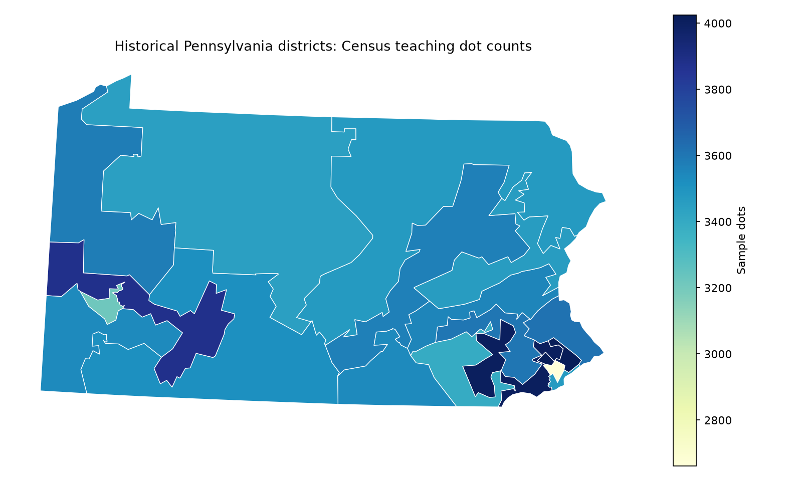

SQL GROUP BY
Counts by source category
Loading the exported query results…
Bars scale to the largest category. These are historical source labels.
How the database answered
- Read the previous week's Parquet points and GeoJSON districts.
- Transform both to a local projected CRS.
- Use
ST_Coversto match each dot to a district. - Group in SQL and export only the summary and map.
SPATIAL JOIN
Where the sample dots fall

Sources and interpretation
The demonstration reuses the class's thinned synthetic Census dot file and 2015 district GeoJSON. The dot data originated in the Datashader Census archive; boundaries originated in Census cartographic boundary files.
Boundary ties are assigned once to the smallest matching district ID. This is a reproducible teaching convention, not a demographic allocation method. No database or Python process runs in your browser; you are viewing exported results.